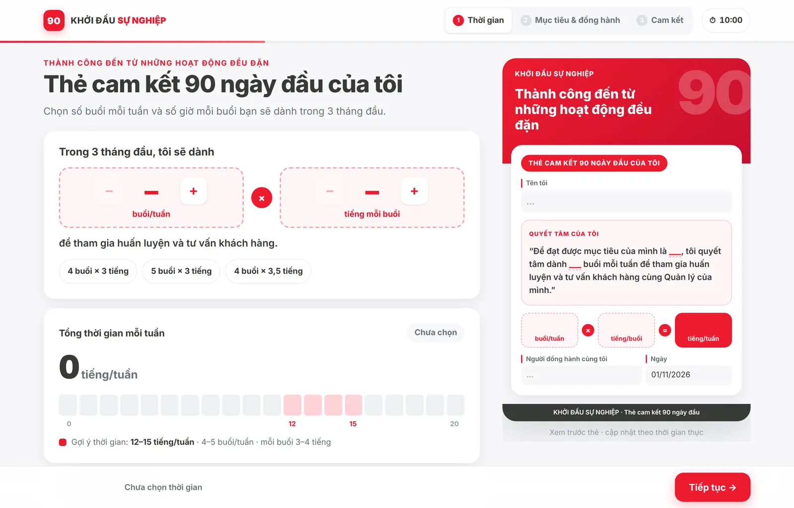
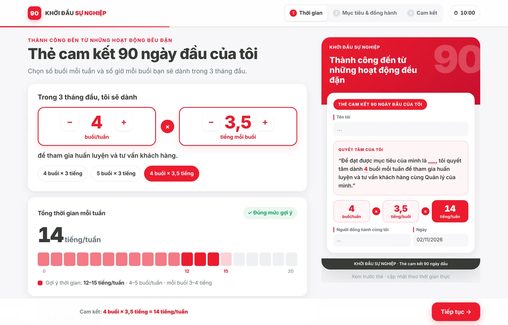
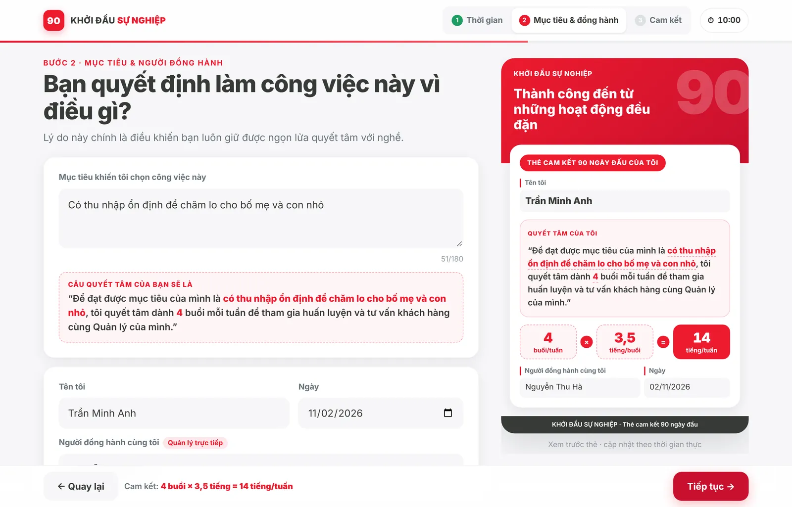
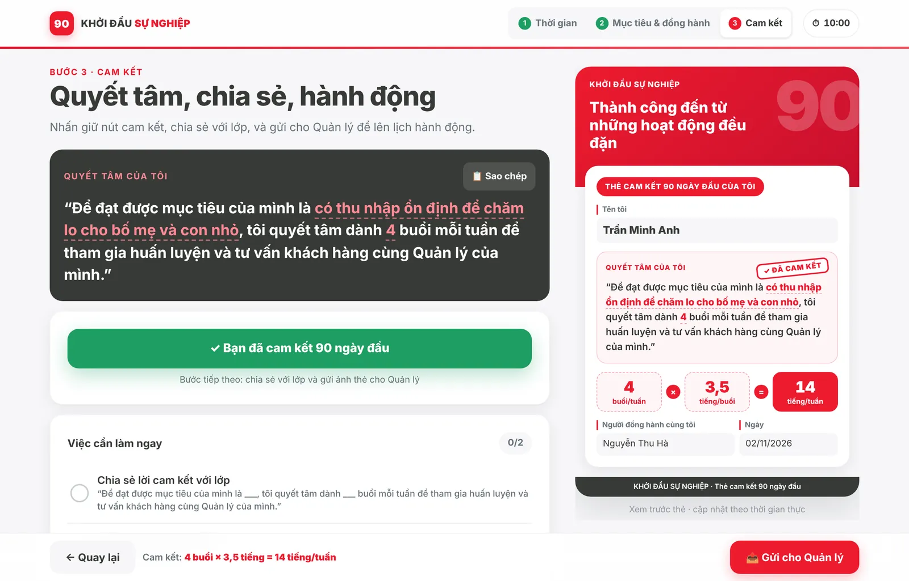
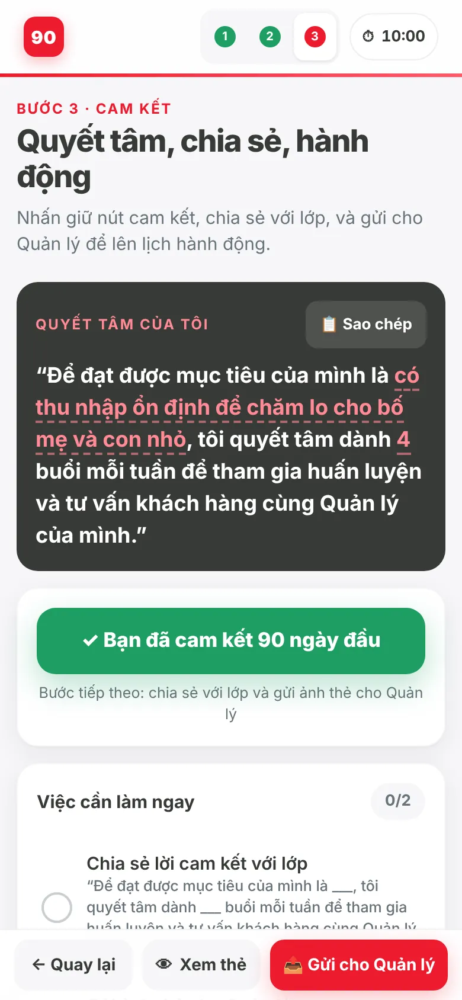
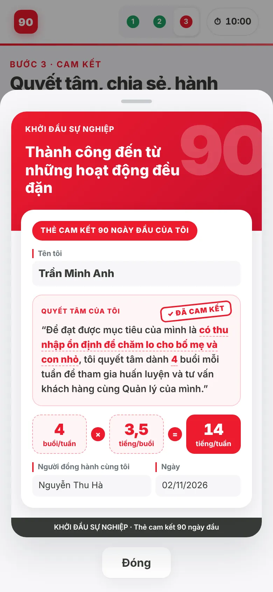
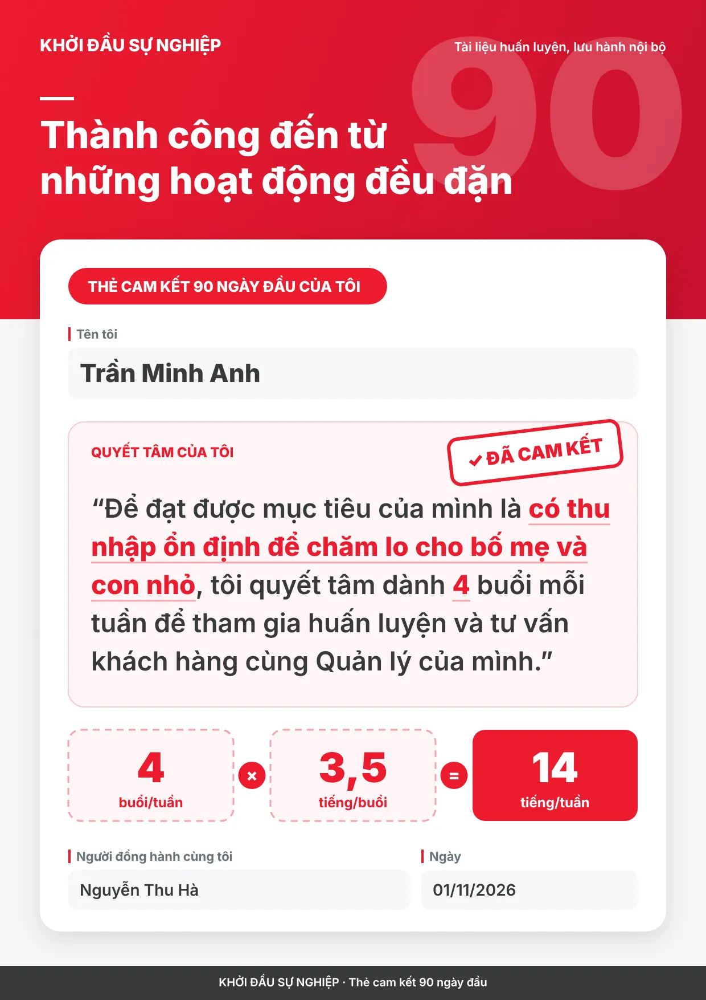

90-Day Commitment Card
A three-step digital commitment card that turns the emotional close of an onboarding day into a specific weekly plan shared with a line manager.
Onboarding days often end on a high, with a commitment card filled in by hand. Most cards say "I will try my best". They are vague, they stay in a notebook, and the line manager never sees them, so the commitment has no follow-up.
- Make the plan concrete before it is emotional. Step 1 asks for sessions per week and hours per session, then shows the weekly total against the recommended 12–15 hour range.
- Anchor the plan in the learner's own reason. Step 2 asks why they chose this career, and the commitment sentence assembles itself live from their words.
- Name an accountability partner. The line manager's name goes on the card, so the plan has an owner on both sides.
- Turn commitment into a small ritual. Press and hold for 1.5 seconds to commit; a stamp lands on the card.
- Hand the evidence to the workplace. The card exports as an image or PDF and is shared straight to the manager, which is where the 70 in 70-20-10 happens.
How it works, step by step
The interface is in Vietnamese because it was built for Vietnamese learners. Captions explain each step. Select any screenshot to open it full size.
On a laptop




On a phone





What makes it work
Specific, not inspirational
The card records numbers (sessions, hours, weekly total), a personal reason and a named partner. That is the minimum for a manager to coach against.
A ritual that is hard to skip
Press-and-hold makes the commitment a deliberate act. Editing anything afterwards removes the stamp and asks the learner to recommit.
Built for the follow-up
One tap sends the image to the manager with a ready message. The to-do list tracks "shared with class" and "sent to manager".
Resilient in a classroom
Progress autosaves on the device, the keyboard hides the bottom bar on phones, and a 10-minute timer keeps the activity on schedule.